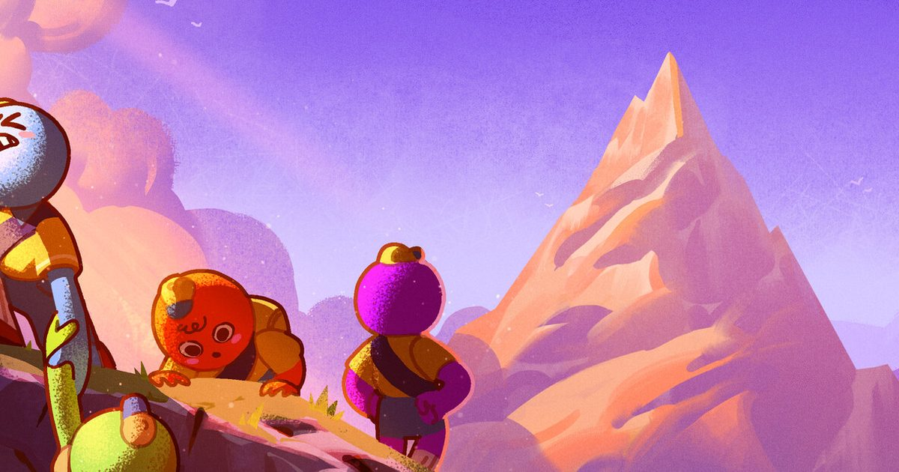

2026-10-17 · 新游深读
今天（10 月 17 日）官宣的消息：合作攀登游戏《PEAK》10 月 22 日登陆 PS5 / Xbox Series X|S / Switch 2，数字版 6.99 美元，PS5 / Xbox / Switch 2 / PC 四端跨平台联机首日开放；PS5 实体版 12 月 9 日跟进，19.99 美元。这款由美国的 Aggro Crab（《Another Crab's Treasure》）和瑞典的 Landfall（《Content Warning》《TABS》）凑成的"Team Peak"，2025 年 6 月把一个在首尔 game jam 里关了一个月做出的原型扔上 Steam，首日 10 万份，9 天 200 万份，到 2025 年 8 月中旬卖了 1000 万份。表面看这是又一个"friendslop"爆款移植，但真正值得聊的是它做对的几件反常识的事——尤其是最后那件：它在游戏最火的时候，宣布不再更新了。

《PEAK》的设定一句话就能讲完：四个迷路的自然侦察员，坠机在一座神秘岛屿上，唯一获救方式是爬上岛中央那座山。第一人称，最多四人，每个生物群系都有自己的一套死法。它真正的设计全在三个系统上：
结果是一种"摔倒的成本由全组承担"的体验：你坠落，痛的是队友的进度条。这个结构让它的笑点和挫败感都长在关系上，而不是操作上。
2026 年 8 月 11 日，《PEAK》推出最后一次大型内容更新 The Final Ascent：两个新生物群系（雾沼 Gloom、垂直要塞 The Citadel）、新难度 Ascent 8、一个首次会主动追猎玩家的怪物，以及 Scoutmaster Myres 一年多来的第一句台词（由 Strange Scaffold 的 Xalavier Nelson Jr. 配音）。更新上线后 24 小时在线峰值冲回 12 万——离首发 17 万的纪录不远。
然后，两家工作室公开宣布：内容更新到此为止，之后只修 bug。理由说得很坦白：他们不想让 PEAK 变成 forever game。
这件事放在行业语境里有多反常，不用我多说。一款单价不到 8 美元、卖出 1000 万份、在线人数刚被最终更新拉回峰值的合作游戏，标准剧本是趁热出 battle pass、出赛季、出联动皮肤池。他们选了相反的方向：14 个月、三波内容、收尾。
我们认为这不是浪漫主义，是精确计算。PEAK 的全部乐趣来自"第一次"：第一次掉进雾沼、第一次全队在山顶前摔下去、第一次被 Scoutmaster 追。这类乐趣有保质期，且续不了杯。与其让内容稀释把口碑拖进平缓下滑，不如在最响的时候停表——这不是不做服务型游戏，是认清自己不是服务型游戏。
大多数合作游戏挤破头做公开匹配，PEAK 的联机是 friends-only——你只能邀请最多三个好友，系统不提供任何"随机队友"入口。表面上这是功能缺失，实际上它是最重要的一条设计约束。
想想它的笑点从哪来：近聊语音里队友的惨叫、递出去的最后一根能量饮料、把朋友骗到悬崖边的"这里能跳"。所有这些梗的前提是你们认识。陌生人局里，摔下山只是失败；好友局里，摔下山是社死，是要在群聊里被做成表情包的。PEAK 的传播力全部长在后者上——它是一个社交放大器，而放大器的输入端必须是真实关系。
同一逻辑也解释了为什么 PS5 实体版要在盒子里塞一张 Buddy Code：买一份实体，送朋友一份数字版。它没有在打折，它在直接给你制造一个队友。对一个好友局游戏来说，这比降价有效得多——降价解决"买不买"，Buddy Code 解决"跟谁玩"。
每 24 小时轮换一次地图，这件事的后果比"增加重玩价值"深得多：它让攻略内容无法沉淀。
爬山类游戏的攻略视频天然是"最优路线教学"，而教学视频会吃掉游戏的话题性——当 B 站上全是三分钟速通时，普通玩家失去的恰恰是"我们第一次一起瞎爬"的乐趣。PEAK 的每日轮换把攻略的保质期压缩到一天，创作者只能做反应型内容（翻车集锦、四人局实况），而这些内容卖的是"一起玩"的欲望，不是标准答案。这大概就是它能在 Twitch 上炸开、并且持续两年的底层原因。
主机版把这整件事摆到了新考场：跨平台联机拆掉了"四人局必须同平台"的最大门槛，但 6.99 美元的主机定价是另一回事——主机商店的比价环境和 Steam 完全不同，低价在主机上不一定自动等于低门槛。这是 10 月 22 日之后最值得盯的数据点。
设计自洽度：9.2 / 10（体力、近聊、每日换岛、好友局四个约束互相咬合，几乎找不到一条独立可拆的设计）
商业判断：9.0 / 10（主动终止内容更新 + Buddy Code 送好友，两步都逆着行业惯性走且都走得通）
主机版前瞻：7.5 / 10（跨平台联机是对的，但定价策略和主机语音生态未经检验）
单人体验：5.5 / 10（离线单人可玩，但所有核心设计都假设你身后有三个熟人）
主机版综合期待值：8.3 / 10
可查的硬信息：Steam 版 2025 年 6 月 16 日发售，Team Peak = Aggro Crab + Landfall，项目起于 2025 年 2 月首尔为期一个月的 game jam（3 名 Aggro Crab + 4 名 Landfall 挤一间公寓，主题最早在瑞典一个热水浴缸里聊出来）；销量首日 10 万、6 天 100 万、9 天 200 万、2025 年 8 月中 1000 万，Steam 历史峰值同时在线 170,759；OpenCritic 媒体推荐率 100%，PC Gamer 86 分。更新史：2025-08 Mesa、2025-11 Roots、2026-08-11 The Final Ascent（Gloom / The Citadel / Ascent 8 / Scoutmaster 首次发声），官方确认为大内容终点。主机版 2026-10-22 上线 PS5 / Xbox Series X|S / Switch 2，数字版 6.99 美元，四端跨平台联机；PS5 实体版 12 月 9 日 19.99 美元（光盘 + 侦察员护照贴纸 + Buddy Code），Switch 2 实体在开发，Xbox 无实体计划。联名履历：2025 年 12 月 bbno$ 游戏内演唱会、2026 年 3 月 Fortnite 皮肤包。
PEAK 的成功经常被归因于"便宜 + 好笑"，我们认为这个归因漏掉了主语。便宜是发行策略，好笑是结果，真正的因是它把"熟人"写进了设计约束里。好友局限定、近聊语音、摔倒惩罚全组共担、实体版送朋友一份——四个决定指向同一个目标：确保每一次坠落都发生在你认识的人面前。这才是它和一堆同品类"合作游戏"的分水岭。主机版能不能复刻，取决于主机玩家愿不愿意为"拉朋友"付出一点点社交成本——我们倾向于愿意，但 6.99 美元在主机商店里会不会被当成"小成本凑单游戏"而损失那种"必买"的社交正当性，是个真实的风险。
| 作品 | 陌生人局 | 长线运营 | 结局 |
|---|---|---|---|
| Phasmophobia（2020） | 开放 | 常年更新 | 长青，但热度缓慢稀释 |
| Lethal Company（2023） | 开放 | 单人开发、断续更新 | 爆红后进入长尾 |
| Content Warning（2024） | 开放 | 免费更新 | 爆红数周后迅速降温 |
| PEAK（2025） | 拒绝（好友限定） | 主动终止（14 个月收尾） | 最终更新把在线拉回峰值 |
一摆就能看出：同品类里"更新最多"的没有一家比 PEAK 的收尾更漂亮。它用行动证明了一个反直觉的命题——合作游戏的口碑管理，有时候靠的是知道什么时候闭嘴。
《PEAK》不是一个技术惊艳的作品，甚至玩法原型糙得能看见 game jam 的毛边。但它做了三件大多数团队不敢做的事：把社交关系写进硬约束、在最热的时候宣布停更、用"送朋友一份"代替打折。主机版是这套哲学的最后一次验证——如果四端跨平台联机真的把"你的朋友在哪个平台"这个问题消灭掉，那它就不只是又一波销量，而是给整个合作游戏品类演示了一遍什么叫把设计原则执行到商业层。
10 月 22 日，6.99 美元，喊上你的人。山不等人，地图明天就换。